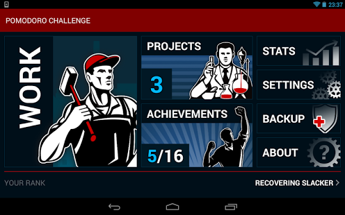
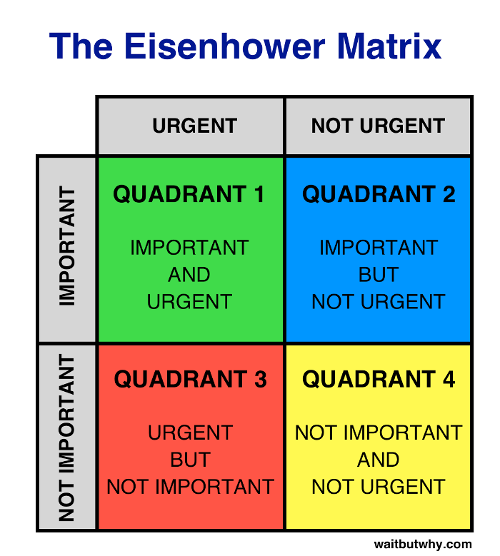
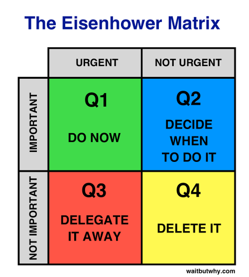
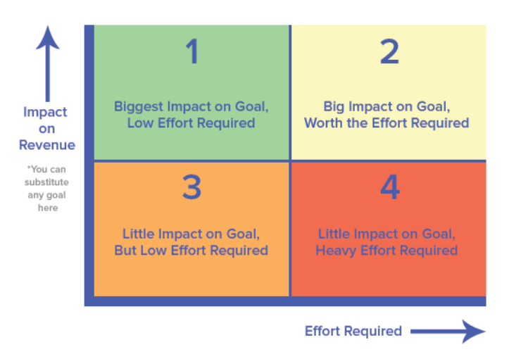

Au sommaire
- Pomodoro
- Pratique délibérée
- La matrice d'Eisenhower
REX
- Pas besoin d'être trop strict
- Utiliser Pomodoro Challenge

5 composantes essentielles
- Concentré sur l'amélioration des résultats
- Feedback immédiat
- Exercices facilement répétable
- Pas vraiment plaisant
- Intense mentalement
Mon expérience de la pratique délibérée
- Taper en colemak
- Appendre la syntax Vim
- Musculation [FAIL]
- Course à pied [FAIL]
Comment je fais pour savoir sur quelle tâche travailler ?
Matrice Importance/Urgence

Je fais quoi ensuite ?

Matrice Impact/Effort

Mon REX
- Commencer par une seule matrice Urgence/Importance
- Faire une matrice effort/impact par gros projet
- Outils : Todoist (avec filtre), Bigpictu
Références
- http://pomodorotechnique.com/
- The First 20 Hours: How to Learn Anything ... Fast by Josh Kaufman
- The 7 Habits of Highly Effective People par Stephen Covey
- The 5 Choices: The Path to Extraordinary Productivity